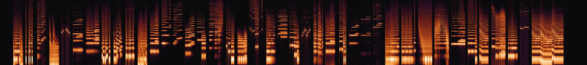

Tuning · November 2026 · updated after the schematics
Forty presets, measured against a real Synthex.
Scintilla plays the Elka Synthex's forty factory presets on an M-VAVE FM-1. Each one was tuned towards Per Kristian Risvik's recording of a real 1981 Synthex: the notes he plays were found in the recording, the FM-1 played them on the same preset, and the two spectra were compared. Here are all forty: how close each comes, what two rounds of tuning changed, why the second one meant reading Elka's schematics, and what is still off.

The whole tour as Scintilla plays it in the video, 40 Hz to 11 kHz, 3 min 12 s: click anywhere to listen from there.
The video
How close is close
The number under each preset compares two spectra: the recording's stretch, and Scintilla playing the same notes. Both are cut into third-octave bands from 30 Hz to 11 kHz and set to the same average level, so the number measures the sound, not the loudness. It is the rms of the band-by-band difference, in dB, over the bands within 50 dB of the loudest. Identical spectra would score 0.
Under 3 dB the two curves lie on top of each other. Past 10 dB a whole region of the spectrum is somewhere else. These two are the closest and the furthest of the forty.
All forty
The four banks of the Synthex's ROM, in its own numbering. Each spectrogram shows the recording above Scintilla, the same stretch and the same notes, each on its own loudest point. Play it, then follow the link to the same moment in the recording on Per Kristian's site.
The numbers as a table
| # | Preset | Original | AC coupling | Tracking, sustain | Filtered chorus | Layer LFO | In the video | Notes |
|---|
Then a click, and Elka's schematics
The first November round fitted numbers to the recording. The second started by ear. Ring mod. is the Synthex's laser harp sound, and on Scintilla each of its low notes began with a hard click. The recording has none.
The score could not see it: a click lasts four milliseconds, and the score compares three seconds of spectrum. Finding where it came from led to Elka's service manual, and to three places where the engine was a generic synthesizer and the Synthex is not.
The click 10 to 14 ms into every low note
The treble of one low C, millisecond by millisecond from the note's start, against its own level through the note. On the Synthex it stays within 3 dB. On Scintilla it jumped 11 dB for four milliseconds.
The cause was the first round's own fix. Since then each oscillator reached the ring modulator without its DC, and the ring modulator multiplied the two. Ring mod.'s first oscillator is a 72 % pulse: without its DC it sits at +0.57 for most of the cycle and at −1.43 for the rest. Multiply by that and the second oscillator comes out 8 dB louder for 4 ms of every 15 ms cycle. Ten milliseconds into a low note, such a patch came through as a burst of treble.
Multiplying the oscillators with their DC instead removed the click and made the sustained sound worse (3.0 → 3.9 dB). So the question became what the Synthex does.
The ring modulator is eight XOR gates synthex-web #49 · Scintilla #23
The voice board (410CST5800, page 22 of the service manual) has no multiplier on it. A Synthex oscillator is digital up to its last step: a counter, eight XOR gates, and a resistor ladder that turns the eight bits into a voltage.
Each XOR gate passes its bit or inverts it, and all eight take the same control line. Normally that line is the oscillator's own flip-flop, which inverts every other ramp and so folds the ramp into a triangle. With RING MOD on, a switch gives the gates the other oscillator's pulse instead: the wave runs backwards while that pulse is high.
For a pulse wave this means the output is the pulse while the other oscillator is low and its mirror image while it is high. The level never changes, and part of the second oscillator passes untouched, which no multiplier gives. That is now what both engines compute.
The click: 11 dB → 3, the recording's. Closer: Landing 10.3 → 8.0, Clavichord II 4.0 → 3.3 dB. Further: Ring mod. itself, 3.0 → 3.5: without the click, but its sustained spectrum half a dB off again.
Cross-mod takes the triangle, not the pulse synthex-web #50 · Scintilla #24
The same sheet shows the last step. The pulse is made by a comparator: high while the DAC wave is above the pulse-width voltage. The MOD switch adds the other oscillator's DAC wave to that voltage through two 10K resistors. So cross-mod is not driven by the other oscillator's output, as the engine had it, but by the triangle in front of its comparator, and the two resistors fix the depth: the full wave moves the width by a quarter either way. The engine had a third of that, fitted to another emulation.
One thing is fitted, not read: which way round the triangle acts. One sign serves all four presets that use cross-mod.
Closer: Metallic 6.2 → 4.0, Ring mod. 3.5 → 2.9, Fat Sound 4.2 → 3.7 dB.
One LFO for all the voices, and two knobs read backwards synthex-web #48 · Scintilla #22
The LFO board (410CST5850) holds one LFO for each layer, and the firmware's key-assign routine restarts it, with its delay, only on the first key of a phrase. The engine had given every voice its own, stopped while the voice was silent. Now a preset's vibrato fades in at the start of each phrase and its voices move together, and Landing's slow sweep carries on across notes.
The same board shows that both LFO depth knobs are stored inverted in the preset memory, as the cutoff knob is. The recording agrees: the organs' tremolo is 1 dB of ripple, not the 4 to 5 the engine played.
This run also carries three presets corrected against the recording: High pass sweep (filter envelope at half its decoded amount, cutoff 8 semitones lower), Filtered brass and Clavichord I.
Closer: High pass sweep 16.5 → 10.3 dB, Electric piano II 11.2 → 5.2, Violins 11.0 → 5.4, Landing 12.7 → 10.3, Reed organ 6.1 → 3.8, Chimes 9.9 → 8.5, Take-off 5.4 → 4.0, Clavichord I 4.3 → 3.2, Clavinet 4.0 → 3.0. Further: Church organ 8.5 → 10.8 and Pianet 7.6 → 9.7 in that run; in the video's run they score 5.7 and 8.8, which is the run-to-run spread described below.
The schematic changes are not free on a pocket synth. Eight voices of Ring mod. now take 63 % of the FM-1's core, up from 54 %: a second pulse to compute for the ring modulator, and a triangle for the cross-mod.
What the first November round changed
The October tuning decoded the presets from the Synthex's EPROMs and fitted the engine's knob laws to the recording: that story is here. Making the video put every preset next to the recording again, and three things stood out. Each was fixed in synthex-web first, then in Scintilla, and each round was scored on the same forty stretches.
The oscillators lose their DC synthex-web 2b0f5c3 · Scintilla #19
A pulse wave of width w carries 2w − 1 of DC: −0.81 on Electric piano I's 9 % pulse, more than its tone. It went through the filter and the amplifier and came out as a thump under every note. The recording has nothing below 20 Hz on any of the forty. Each oscillator now reaches the mixer and the ring modulator through a 5 Hz coupling, as if through a capacitor, which is how the Synthex's analogue oscillators would reach theirs.
Closer: Brass II 8.2 → 5.7 dB, Pianet 11.6 → 8.7, Electric piano I 7.6 → 5.4, Clavichord II 6.2 → 4.5, Clavinet 5.1 → 3.5, Ring mod. 3.4 → 2.6. Further: Church organ 7.5 → 9.6.
Key tracking and filter sustain synthex-web 1da4205 · Scintilla #20
Measured on the held notes that open each preset's passage. Full key tracking is a semitone per key, not the 0.81 the schematic's resistors suggested: above C2 the organs fell 0.19 semitone further behind with every key. And the filter envelope's sustain reaches 0.7 of its knob: once their decay was over, the presets that sit high at sustain were 15 to over 30 semitones brighter than the recording.
Closer: Electronic organ 7.2 → 4.5 dB, Reed organ 8.0 → 6.1, Pianet 8.7 → 7.6, Church organ 9.6 → 8.5, Filtered strings 7.5 → 6.6, Phased sweep 2.2 → 1.6. Further: Electric piano II 6.5 → 11.2: its synced second oscillator now sits under the filter's resonance near 2 kHz.
Filtered chorus synthex-web 25de95b · Scintilla #20
Its two opening notes were 12 to 15 semitones brighter than the recording through their first second: the filter envelope reaches 0.64 to 0.71 of its decoded amount. It is a correction for this one preset, not a rule: applied to the similar slow-attack presets, it took Brass II from 4.6 to 12 dB.
Closer: Filtered chorus 8.2 → 3.1 dB.
Each preset's spectrum difference before November and now, closest first. The mean went .
Still off
The furthest six, and what their spectra say. The differences are relative, because the score is level-free: "more top" means more top than bottom, compared with the recording.
One engine, two places
synthex-web plays the same presets in a browser. Scintilla is its engine ported to integer C, for a pocket synth with a 240 MHz core and no floating-point unit. Every change to Scintilla's engine is checked against synthex-web's, preset by preset: 80 patches in four scenarios each, level within 0.06 dB. The firmware running in an emulator of the FM-1's CPU must produce exactly the same samples as the build on a computer. So a fix lands in synthex-web first, then here, and both play it.
Pick a program in synthex-web to hear it in a browser; on an FM-1, the PRESETS knob reaches all forty.
How it was measured
- Where each preset is. The recording plays the forty in order. A mark was set where each one starts: the first ten and the last ten are certain, the middle twenty less so.
- A stretch to compare. Three seconds inside each preset's part (4.5 s for the slow sweeps), starting on a clear note and chosen so the playing doesn't pause.
- The notes he plays. The engine renders every key of the preset on its own. The stretch's spectrogram is then explained as a mix of those keys, which turns sound back into notes, footages and transposes included. Take-off and Landing, a held note under a slow sweep, were set by hand.
- Scintilla plays them. The real firmware runs in fm1-emu, an emulator of the FM-1, from MIDI: the same preset, the same notes and timing. The video is that run, filmed, its sound unedited except for the level.
- The score. The spectrum difference described above, between the recording's stretch and the firmware's.
The tools are in the repository:
demo/tour/
(transcribe.py, video.py, and page.py, which made this page's data).